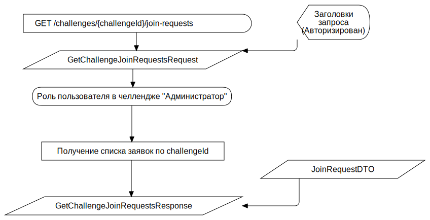

Просмотр запросов на вступление в закрытый челлендж F
FCFlowchart
TAction
::
Use Cases
::
Diagrams
::
PUC: Челленджи
::
Просмотр запросов на вступление в закрытый челлендж
::
Просмотр запросов на вступление в закрытый челлендж F
Description
none
Diagrams

Просмотр запросов на вступление в закрытый челлендж FD
Properties
Name
Value
name
Просмотр запросов на вступление в закрытый челлендж F
Owned Elements
Просмотр запросов на вступление в закрытый челлендж FD
GET /challenges/{challengeId}/join-requests
GetChallengeJoinRequestsRequest
GetChallengeJoinRequestsResponse
JoinRequestDTO
Получение списка заявок по challengeId